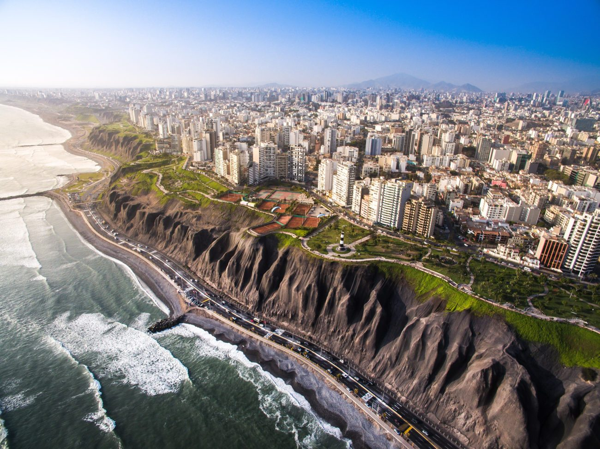

Mi nombre completo es Gianfranco Moisés Céspedes Francia. Nací el 9 de junio del año 2000 en la ciudad de Lima, donde resido actualmente.
Estudié en el colegio Friederich Gauss. Actualmente estudio la carrera de Ingeniería de Sistemas en la Universidad Nacional Mayor de San Marcos (UNMSM).